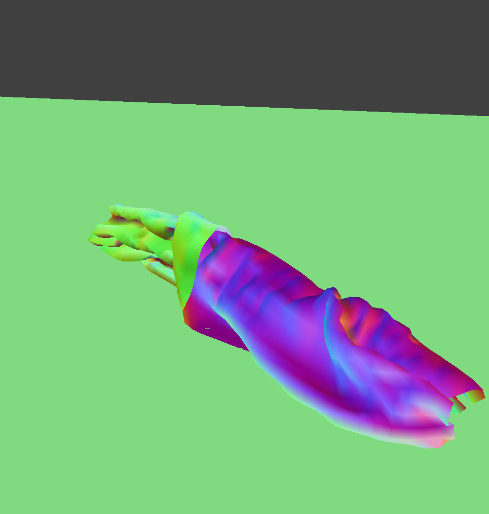

Overview
Give a high-level overview of what you implemented in this project. Think about what you've built as a whole. Share your thoughts on what interesting things you've learned from completing the project.
Part I: Masses and springs
Take some screenshots of scene/pinned2.json from a viewing angle where you can clearly see the cloth wireframe
to show the structure of your point masses and springs.
Show us what the wireframe looks like (1) without any shearing constraints,
(2) with only shearing constraints, and (3) with all constraints.
|
No shearing constraints
|
|
Only shearing constraints
|
|
All constraints
|
Part 2: Simulation via numerical integration
Experiment with some the parameters in the simulation.
To do so, pause the simulation at the start with P, modify the values of interest, and then resume by pressing P again.
You can also restart the simulation at any time from the cloth's starting position by pressing R.
Describe the effects of changing the spring constant ks; how does the cloth behave from start to rest with a very low ks?
A high ks?
With a low ks, we see the cloth has a tendency to stay flatter. As we raise the ks, the cloth is more scrunched together, as the spring has a higher tendency to stay closed.
What about for density?
Lower density has fewer folds, whereas higher density has more folds, as the cloth stretches less.
What about for damping?
With higher damping, the cloth quickly comes to rest when the simulation is played. With low damping, the edges still ripple a bit before coming to rest.
For each of the above, observe any noticeable differences in the cloth compared to the default parameters
and show us some screenshots of those interesting differences and describe when they occur.
|
damping = 0.09
|
damping = 0.3
|
|
The largest differences here are in the folds around the pinned corners. Some are more pronounced, some have more folds, and some impact the rest of the cloth more.
Show us a screenshot of your shaded cloth from scene/pinned4.json in its final resting state!
If you choose to use different parameters than the default ones, please list them.
Part 3: Handling collisions with other objects
Show us screenshots of your shaded cloth from scene/sphere.json in its final resting state
on the sphere using the default ks = 5000 as well as with ks = 500 and ks = 50000.
|
$\text{ks} = 500$
|
Initial configuration ($\text{ks} = 5,000$)
|
$\text{ks} = 50,000$
|
|
Describe the differences in the results.
With a larger k, we see that the cloth bends less and tries to stay flatter. With smaller k, the cloth almost completely conforms around the sphere and bends more.
Show us a screenshot of your shaded cloth lying peacefully at rest on the plane.
If you haven't by now, feel free to express your colorful creativity with the cloth!
(You will need to complete the shaders portion first to show custom colors.)
Part 4: Handling self-collisions
Show us at least 3 screenshots that document how your cloth falls and folds on itself,
starting with an early, initial self-collision
and ending with the cloth at a more restful state (even if it is still slightly bouncy on the ground).
 Self collision 1
Self collision 1
|
Self collision 2
|
Vary the density as well as ks
and describe with words and screenshots how they affect the behavior of the cloth as it falls on itself.
|
$\text{density} = 5$
|
$\text{density} = 50$
|
|

$\text{ks} =500$
|
$\text{ks} = 50000$
|
With lower density, the cloth almost seems to stand up on itself, whereas with higher density, the cloth has a tendency to collapse to the ground. With lower k, we see that the cloth wrinkles and collapses on itself more, whereas a higher k the cloth stays more in one piece, with fewer folds overall.
Part 5: Cloth Sim
Explain in your own words what is a shader program and how vertex and fragment shaders work together to create lighting and material effects.
Shader programs allow for fast, real-time rendering of raytracing by running the program in parallel on a GPU. The vertex shader applies vertex positions to the output, along with other variables that get passed into the fragment shader. The fragment shader is run after rasterization- upon recieving the inputs from the vertex shader, it computes a color output that gets passed to the renderer.
Explain the Blinn-Phong shading model in your own words.
Show a screenshot of your Blinn-Phong shader outputting only the ambient component, a screen shot only outputting the diffuse component, a screen shot only outputting the specular component, and one using the entire Blinn-Phong model.
Blinn Phong shading uses three different components of lighting in order to build a realistic model. Each component has its own amount of light and constant, with the total ambient, diffuse, and specular lighting all combined.
|
Ambient component only
|
Diffuse component only
|
|
Specular component only
|
Complete Blinn-Phong model
|
Show a screenshot of your texture mapping shader using your own custom texture by modifying the textures in /textures/.
Show a screenshot of bump mapping on the cloth and on the sphere.
Show a screenshot of displacement mapping on the sphere.
Use the same texture for both renders.
You can either provide your own texture or use one of the ones in the textures directory,
BUT choose one that's not the default texture_2.png.
Compare the two approaches and resulting renders in your own words.
Compare how your the two shaders react to the sphere by changing the sphere mesh's coarseness by using -o 16 -a 16 and then -o 128 -a 128.
|
Bump Mapping on the Cloth
|
Bump Mapping on the Sphere
|
|
|
Displacement Mapping on the Sphere
|
|
Bump Mapping -o 16 -a 16
|
Bump Mapping -o 128 -a 128
|
|
|
Displacement Mapping -o 16 -a 16
|
Displacement Mapping -o 128 -a 128
|
Both displacement and bump mapping show the shading of the textures, but bump mapping remains smooth whereas displacement mapping changes the geometry of the meshes. We see that the sphere edges in displacement mapping have small divots where the texture would potrude. The bump shader has no reaction to changing the coarseness of the sphere, but the displacement mapping changes the size of the geometric changes. These divots become more fine tuned to the shape of the texture.
Show a screenshot of your mirror shader on the cloth and on the sphere.
|
Mirror Shader on the Cloth
|
Mirror Shader on the Sphere
|
|